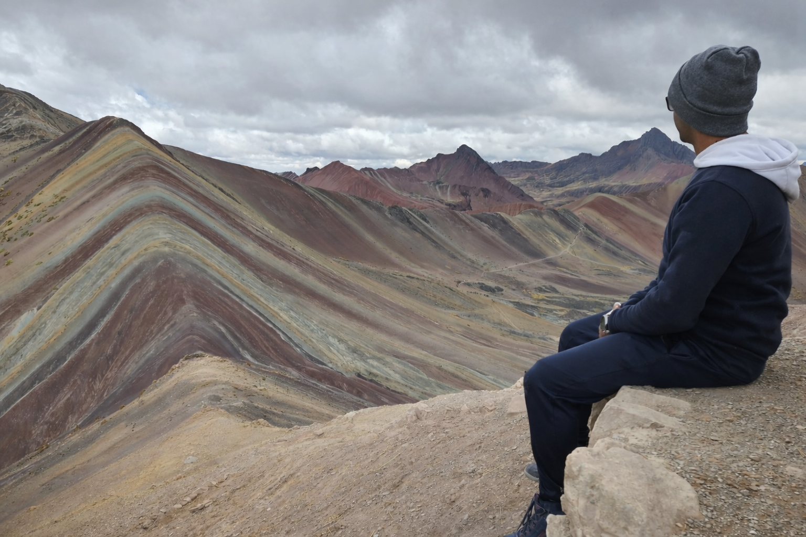

Machine Learning for Seismology
Deep-learning models for seismic event detection, phase picking, and scientific time-series analysis.

PhD Candidate in Geophysics and Seismology
Ramin · University of Toronto
Geophysicist
I develop machine-learning and high-performance computing workflows for microseismic monitoring, seismic event detection, phase picking, and subsurface characterization.
I am a PhD Candidate in Geophysics and Seismology at the University of Toronto. My research focuses on applying machine learning and deep learning to microseismic monitoring, especially seismic event detection, phase picking, phase association, and hypocenter localization.
My background combines geophysics, petroleum exploration engineering, rock physics, seismic inversion, and scientific computing. I work with large seismic datasets and build scalable workflows using Python, deep-learning frameworks, seismological tools, and high-performance computing systems.
Focused themes across seismology, machine learning, subsurface characterization, and scientific computing.
Deep-learning models for seismic event detection, phase picking, and scientific time-series analysis.
Automated workflows for weak-event detection, phase association, location, catalog construction, and induced-seismicity analysis.
Rock physics, seismic inversion, AVO analysis, and reservoir characterization.
Scalable seismic workflows using Python, Linux, SLURM, Singularity, and Compute Canada clusters.
An end-to-end workflow for seismic event detection, phase picking, association, and localization using deep-learning models and seismological processing tools.
Application and adaptation of deep-learning models for automatic P- and S-wave arrival picking in local microseismic datasets.
Journal articles and conference contributions on induced seismicity, microseismic monitoring, deep learning for seismic data, rock physics, and seismic inversion.
Grouped capabilities for seismic research, data science, and scalable scientific computing.
I am open to research collaboration, academic discussion, and opportunities involving machine learning for geophysics and seismic data.
PhD Candidate in Geophysics and Seismology · University of Toronto